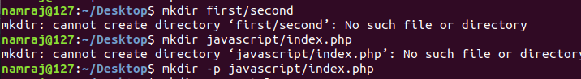

Normally,if you try to create a directory inside another directory that doesn't exist, mkdir responds with No such directory or file error. so only way about this bug is specify -p or --parents option with mkdir.

The -m mode or --mode=mode option causes the new directory to have the specific permissions.Example in png image below.